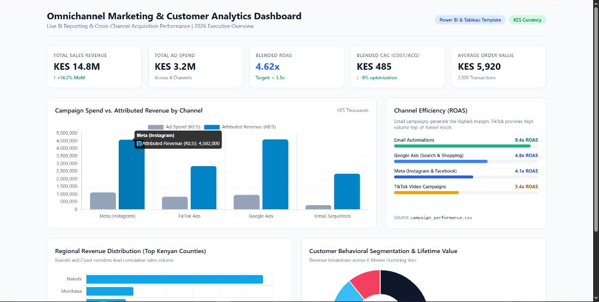
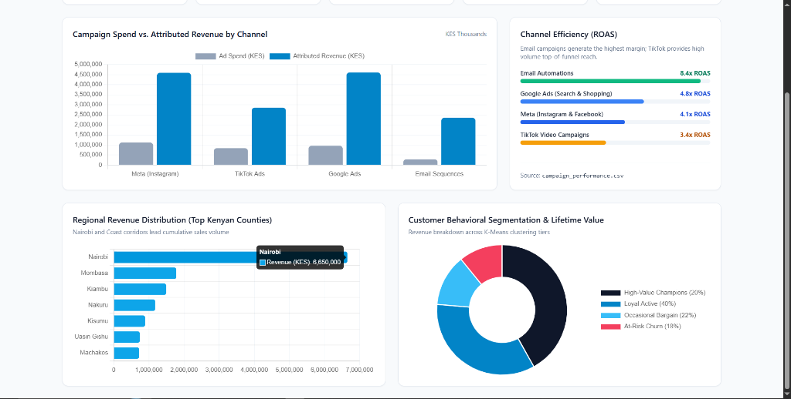
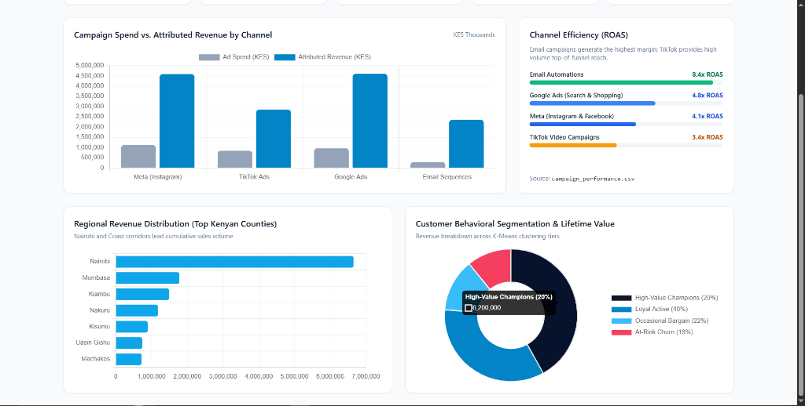

Turning high-volume telemetry & customer data into high-conviction decisions.
I am a Data Analyst & Marketing Analytics Specialist. My work bridges predictive data science, maritime vessel telemetry at Impact Outsourcing, and full-funnel marketing performance tracking in Power BI, Tableau, SQL, and Python.
Omnichannel Marketing & Customer Analytics Dashboard
An end-to-end analytics project bridging top-of-funnel ad spend with downstream customer retention, basket values, and county revenue in Kenya.



01. The Problem
Digital ad spend across TikTok, Meta, and Google was siloed. Customer Acquisition Costs (CAC) were reported in isolation without attribution to repeat purchases, basket size, or geographic order density across Kenya.
02. The Data Architecture
Engineered a relational model integrating 180 days of multi-channel ad spend against 2,500 customer transactions. Authored custom DAX calculations for Blended ROAS, CAC, AOV, and Repeat Order percentages.
03. Business Takeaways
Demonstrated that automated email sequences deliver the highest marginal return (8.4x ROAS), while Nairobi and Mombasa represent >55% of revenue, guiding localized inventory stocking.
Machine Learning, Telemetry & Relational Systems
African Credit Scoring Challenge (Zindi Study Jam)
Trained a cross-border default prediction model over 68,000+ Kenyan loan records. Engineered leak-free time-safe features with merge_asof and GroupKFold by customer ID to score out-of-domain applicants in Ghana with zero prior labels.
Alternative SME Credit Scoring Engine & API
Replaces conventional bureau scores with non-traditional behavioral metrics: mobile money transaction velocity, utility consistency, and operational tenure. Containerized with Docker and exposed via secured FastAPI REST endpoints.
Customer Behavioral Segmentation & Kenya GIS Mapping
Applied K-Means clustering across transactional recency, frequency, and monetary (RFM) metrics. Built automated marketing insight generators for each persona alongside interactive Plotly choropleths across Kenyan counties.
Advanced SQL & Relational Database Architecture
Repository of production-grade SQL scripts covering multi-table joins, subqueries, complex analytical window functions (DENSE_RANK, LAG/LEAD), role security schemas, and transaction management.
Competencies & Tooling
Data Science & Python
- • Pandas, NumPy, Scikit-learn
- • LightGBM, CatBoost, XGBoost
- • Time-Series Forecasting
- • Leak-Free GroupKFold Splits
- • Feature Engineering Pipelines
Visualization & Dashboards
- • Python Visual Analytics (Plotly, Seaborn)
- • Interactive Web Dashboards (Chart.js)
- • Streamlit Application Development
- • Executive KPI Scorecards & Reporting
- • Power BI & Tableau (Foundational)
Marketing Analytics
- • Multi-Channel Attribution
- • Funnel Tracking (CTR, CPA, ROAS)
- • Customer Churn Modeling
- • Market Basket (Apriori / Lift)
- • Canva Visual Design Briefs
Databases & Systems
- • Advanced SQL (PostgreSQL, MySQL)
- • OLAP Window Functions & CTEs
- • Docker Containerization
- • FastAPI & Flask Deployment
- • Secure VPN / AIS Telemetry
Experience & Education
Clean, validate, and process high-volume maritime AIS telemetry and satellite tracking feeds to monitor vessel coordinates, speed, and spatial patterns. Connect securely to the Marine Sentry platform (maritime-sentry.private.wnwd-infra.com) via configured VPN infrastructure, and deploy automated Python scripts to detect navigational anomalies.
Planned and executed multi-channel growth campaigns across Instagram and TikTok. Created design briefs and marketing assets in Canva (including the 'Mega Sales!' promotion), mapped automated email nurturing workflows, and tracked conversion funnels to evaluate creative ROI.
Diploma in Data Management & Analytics
KASNEB / KCA University
Comprehensive coursework in SQL Database Management, Python for Data Science, Statistical Modeling, and Warehousing.
Certificate in Digital Marketing (KEN-DM V4)
Generation: You Employed, Inc.
Specialized training in social media growth, audience segmentation, Canva creative design, email automation, and performance metrics.
Let's build something data-driven.
Open to data analyst, marketing analytics, and business intelligence roles. Feel free to reach out directly or review my code on GitHub.